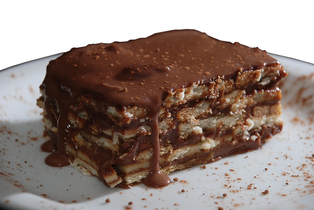
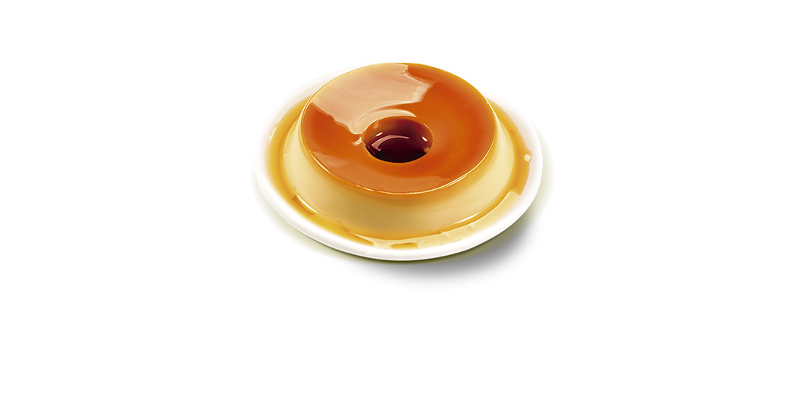

Bolinho de Chuva
Ingredientes:
- 2 ovos;
- 1 xícara (chá) de leite;
- 1 colher (sopa) de fermento em pó;
- 1 colher (sopa) de canela para polvilhar;
- 1 xícara de açúcar;
- 2 e 1/2 xícaras de farinha de trigo;
- 3 colheres (sopa) de açúcar para polvilhar;
- 1 litro de óleo para fritar.
Modo de Fazer:
30 minutos
- Misture todos os ingredientes até obter uma massa cremosa e homogênea;
- Deixe aquecer uma panela com bastante óleo para que os bolinhos possam boiar;
- Quando o óleo estiver bem quente (180º C), com uma colher, comece a colocar pequenas quantidades de massa, e frite até que dourem por inteiro;
- Coloque os bolinhos sobre papel absorvente e depois passe-os no açúcar com canela.
Pavê de Chocolate

Ingredientes:
- 1 pacote de bolacha maisena;
- 1 colher (sobremesa) de chocolate em pó;
- 1/2 copo de leite.
Creme branco
- 1 lata de leite condensado;
- 1 lata de leite de vaca (use a medida da lata de leite condensado);
- 1 colher (sobremesa) de amido de milho;
- 2 gemas.
Creme de Chocolate
- 1 lata de leite condensado;
- 1 colher (sobremesa) de amido de milho;
- 4 colheres de chocolate em pó;
- 1 lata de leite de vaca (a medida da lata de leite condensado);
- 2 gemas.
Cobertura
- 4 claras;
- 1 lata de creme de leite sem soro;
- 4 colheres de açúcar.
Modo de Fazer:
40 minutos
- Em uma tigela, misture o leite e o chocolate em pó até que esteja completamente dissolvido;
- Molhe as bolachas no leite e reserve;
- Vamos fazer o creme branco, em uma panela, leve todos os ingredientes ao fogo médio e misture até obter uma consistência grossa e cremosa;
- Facça a mesma coisa no creme de chocolate;
- Para a cobertura, bata as claras em neve com o açúcar até obter um creme consistente, adicione o creme de leite e misture delicadamente;
- Em um refratário grande, despeje o creme branco, metade das bolachas, creme de chocolate, bolachas e claras em neve;
- Repita o processo até preencher todo o refratário e leve à geladeira por 40 minutos.
Pudim de Leite condensado

Ingredientes:
Massa
- 1 lata de leite condensado;
- 4 ovos inteiros;
- 1 xícara de leite de vaca.
Calda
- 1 xícara (chá) de açúcar;
- 1/3 de xícara (chá) de água.
Modo de Fazer:
40 minutos
- Em uma panela, misture a água e o açúcar até formar uma calda;
- Unte uma forma com a calda e reserve;
- Bata todos os ingredientes no liquidificador e despeje na forma caramelizada;
- Leve para assar em banho-maria por 40 minutos;
- Desenforme e sirva.